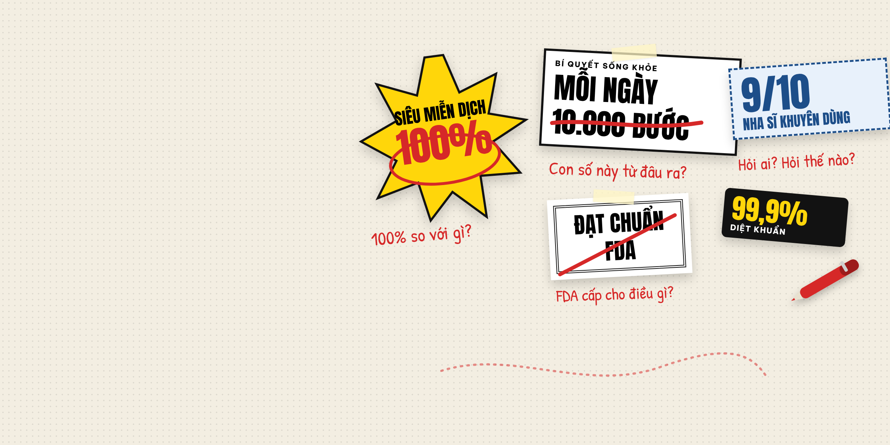

1 · Banner trang chủ, máy tính: đúng khung hiện tại 984 × 289 (tỷ lệ 3,4:1). Chữ dùng phông mặc định của khung.

CHUYÊN ĐỀ MỚI
Bóc mác y khoa
trong quảng cáo
"10.000 bước", "9/10 nha sĩ", "diệt 99,9% vi khuẩn"... Những con số nghe như khoa học đến từ đâu?
Khám phá chuyên đề
2 · Điện thoại: ảnh 350 × 175 (2:1)
3 · Thẻ nhỏ "Các chuyên đề khác"
Bóc mác y khoa trong quảng cáo
4 · Đầu trang chuyên đề: đúng khung ảnh hiện tại 984 × 419
CHUYÊN ĐỀ · DY KHOA BLOG
Bóc mác
y khoa
...trong quảng cáo
Đọc quảng cáo như một biên tập viên cầm bút đỏ: khoanh con số, gạch chứng nhận, hỏi lại nguồn.